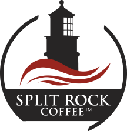

.png)
Retail | Workplace | Hospitality | Fundraising
Split Rock Coffee was founded with this simple idea: bring the high quality coffee usually found only in coffee houses to offices and retail customers.
Although we are a new company, our staff brings years of experience in the coffee industry. Our veteran coffee buyer has worked for twenty years in the specialty coffee market on behalf of a successful chain of coffee shops, as well as a wholesale, retail, and office coffee company. We work closely with a Midwest coffee importer that is a leader in the global specialty coffee industry. We follow the philosophy of purchasing coffees that are in season and then blending them to bring our customers the freshest beans available.Split Rock coffee is roasted by a Minnesota master roaster, who balances the art and science of roasting fine coffee that comes from over 25 years of experience. Our distribution partner is a paper and packaging supply company that has been serving businesses in Minnesota for over one hundred years.
The journey a coffee bean makes from the farm to the cup is full of small steps that must be perfectly coordinated to preserve the quality and flavor of the coffee. Our buyer has travelled to the countries of origin and met with coffee farmers in their fields, marveling at the complexity of moving coffee from remote parts of the world to market. Our coffee importer has built such strong relationships with growers that many deals are closed with just a handshake.
Choosing the highest quality beans, roasting them to perfection, and providing the best customer service possible are the foundations of our business strategy. We believe the difference between good and great is in the details. Split Rock Coffee delivers on our promise of quality from start to finish.
|  |  |
 |
 |
Our 3.5-millimeter thick retail bags
provide moisture and light barriers to
protect the
coffee's high quality. The
bags also feature the industry leading
one-way valve to seal in
freshness.
Our coffees are available whole bean
or pre-ground in 12-ounce bags.

We've selected state-of-the-art
brewing equipment to optimally
extract the best flavor from
our coffee.
This combination of great coffee and
brewing equipment consistently
produces a
top-notch coffee
that will
make your employees and customers
feel appreciated.
.png)

We work closely with our customers,
helping them match our flavorful
light,
medium and dark roasted
coffees to the guests needs. Whether
you use
packs or large urn
brewers, we can deliver consistency
throughout your establishment.
.png)
Fundraising is easy with Split Rock
Coffee. We offer our light,
medium,
dark, and decaffeinated dark roasted
coffee in whole bean
or pre-ground
12-ounce bags. For freshness, we roast
your order to
demand and pack the
coffee in commercial grade bags
.png)
“I was taken by the power that savoring a simple cup of coffee
can have to connect people and create community.”
Blended to perfection
Split Rock's coffee buyer started his career as a chef, choosing and combining flavors to create award-winning dishes. Creating a great cup of coffee happens the
same way. Coffees from around the world have flavor compounds that reflect the soil structure and altitude at which they are grown, as well as the water supply,
sunlight or shade, and other growing conditions. Some coffee growing regions are known for the distinct body found in the coffees they grow; other areas produce
coffees with a citrus acidity, or in rarer cases, fruity overtones.
The roasting process needs to also take other qualities into account. Some coffees are soft, with
a less dense cell structure, and are best lightly roasted, while others
are hard or dense, and dark
roasting brings out the flavors in the bean. Our coffee buyer utilizes his culinary and coffee buying
experience to create blends that work
best at each roast level,carefully testing them to be sure that
the flavors are balanced in the final cup. Split Rock coffee blends are sure to please the most
discriminating palate.
Our Light Roast is 100% Colombian from the Huila (Southern) region of Colombia.
The lighter roast style is balanced, rich and brighter in acidity then the dark
and
medium roasts. This Single Origin coffee is a great example of Colombian coffee.
Our Medium Roast is a traditional Breakfast Blend. This blend highlights the body of Strictly High Grown (SHG) Central American, the mild acidity of East
African,
and the smooth finish of the South American coffees. Medium Roast has notes of sweet chocolate with a dark cherry finish, and makes a great choice for Espresso..
Our Dark Roast is reminiscent of a light French Roast. The combination of Central American and
Indonesian coffee beans produces a great balance of body and
acidity. The beans naturally occurring
dark cocoa, and bittersweet chocolate flavors work well with cream or milk.
"Science may never come up with a better
office communication system than the coffee break."
ADDRESS
Split Rock Coffee Company | 806 14th Avenue NE | Minneapolis, MN 55413
PHONE
612.230.3560 CST |
info@splitrockcoffee.com